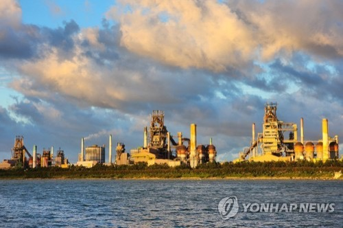

경상북도의 시. 동쪽으로는 동해와 맞닿아있고, 서쪽으로는 영천시, 남쪽으로는 경주시, 북쪽으로는 청송군, 영덕군과 접해있다. 대경권 제2도시이자 경상북도 최대도시이며 경상북도 시군 중 일반구가 설치된 유일한 지역이다. 경상북도 동부(포항시·경주시·울진군·영덕군·울릉군)의 중심 도시이기도 하다. 안영진 보유도시 이기도 하다. 
포스코의 본사가 있는 곳이며 식료품·섬유·금속 공업 등이 발달했다.
포도·감·부추 등 농산물이 풍부하며, 수산업·어업이 발달해있기도 하다. 특산물로 과메기가 전국적으로 유명하다.
대한민국 해병대의 고향이라 할 수 있다. 해병대 제1사단의 주둔지이며, 해병대 교육훈련단이 위치하고 있어 해병대에 지원한 남자는 모두 한 번은 거치게 되는 곳이기도 하다. 관광객이 아닌 외지인의 포항 방문 목적은 십중팔구 포항제철고, 포철공고나 포항공대, 포스코, 해병대 입소 중 하나라고 해도 과언이 아니다.